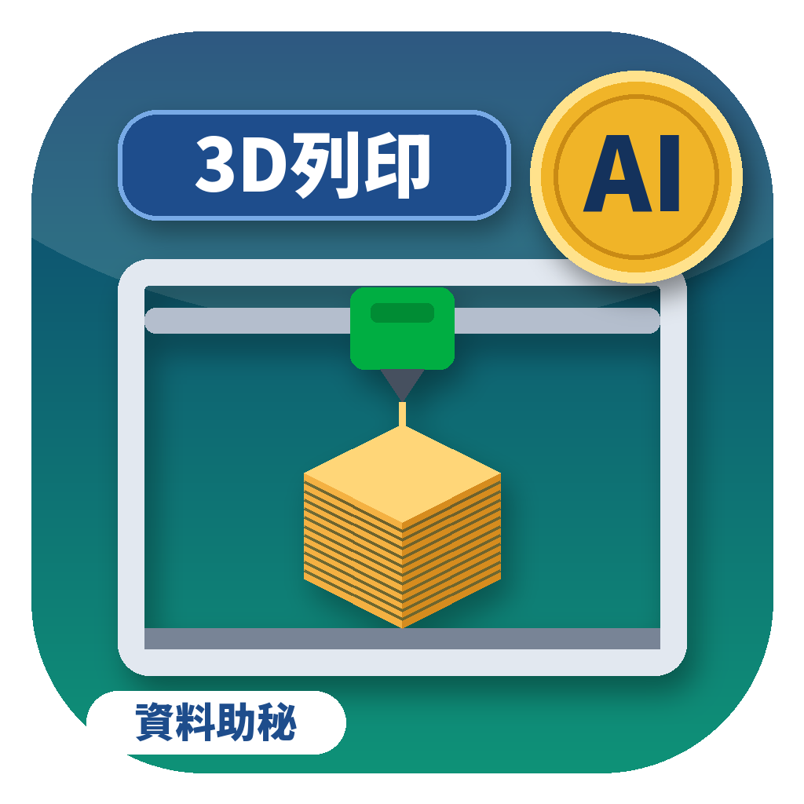

從一句描述到可以在拓竹（Bambu Lab）印表機列印的零件：
描述 → 零件 → 七項列印前檢查 → Bambu Studio。列印永遠由您自己按。
| 功能 | 線上版 | 電腦版（Windows／macOS） |
|---|---|---|
| AI 代理人、零件設計、七項檢查、3MF → GLB、匯出 3MF／STL／GLB／OBJ | ✔ | ✔ |
| 一鍵開啟 Bambu Studio、用 Bambu Studio 引擎估算時間與克數 | 下載 3MF 自己開 | ✔ |
| MakerWorld／Printables 搜尋 | 開啟網站搜尋頁 | 直接列出結果與下載數 |
| 印表機狀態（區網唯讀）、AI 文字／照片轉 3D、彩色模型轉 AMS 多色 | — | ✔ |
| 資料庫、使用者權限、備份還原 | 瀏覽器內 | 內建 MariaDB |